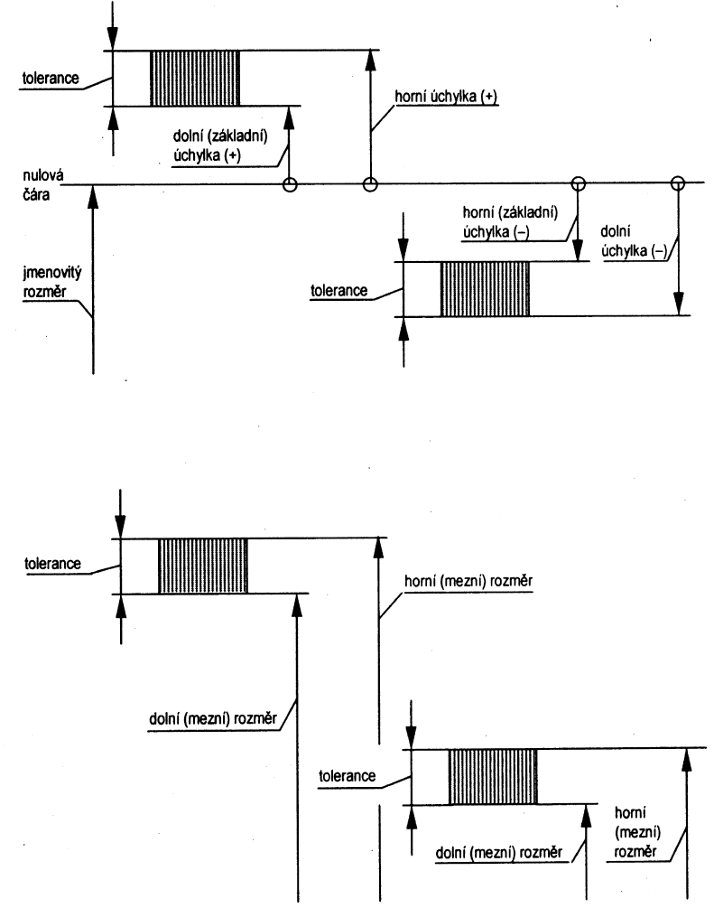

| Rozměr | Číselně vyjádřená hodnota délky (délkový rozměr) nebo úhlu (úhlový rozměr) v obvyklých jednotkách (podle ISO 31), dříve "měřicích jednotkách". | Size (en) Maß (de)*) Dimension (fr)*) |
|---|---|---|
| Jmenovitý rozměr | Rozměr, k němuž jsou vztaženy mezní úchylky. | Basic Size (nominal size) Nennmaß Dimension nominale |
| Skutečný rozměr | Rozměr zjištěný měřením. | Actual Size Istmaß Dimension effective |
| Mezní rozměry | Dva krajní přípustné rozměry prvku. Horní mezní rozměr je největší přípustný rozměr prvku, dolní mezní rozměr je nejmenší přípustný rozměr prvku. | Limits of Size Grenzmaße Dimension limites |
| Mezní úchylka | Algebraický rozdíl mezi mezním rozměrem a jmenovitým rozměrem. Mezní úchylky jsou horní a dolní. Normalizované mezní úchylky jsou uvedeny tabelárně v ISO 286-2 | Limit Deviation Grenzabmaß Écart limite |
| Základní úchylka | Úchylka v soustavě tolerancí a uložení udávající polohu tolerančního pole vzhledem k nulové čáře (jmenovitému rozměru). V soustavě tolerancí a uložení ISO je to úchylka bližší nulové čáře (kladná nebo záporná). Označují se písmeny a až zc pro hřídele a A až ZC pro díry. | Fundamental Deviation Grundabmaß Écart fondamental |
| Rozměrová tolerance | Algebraický rozdíl mezi horním mezním rozměrem a dolním mezním rozměrem. | Dimensional Tolerance Maßtoleranz Tolérance dimensioneile |
| Základní tolerance | Číselná hodnota každé z tolerancí vypočítaná podle vzorců a uvedená tabelárně v ISO 286-1. | Fundamental Tolerance Grundtoleranz Tolérance fondamentale |
| Toleranční stupeň | Vyjádření požadované přesnosti rozměru. Soustava ISO obsahuje 20 tolerančních stupňů od nejpřesnějšího s označením IT01 do nejméně přesného s označením IT18. | Tolerance Grade Toleranzgrad Degré de tolérance |
| toleranční třída | Vyjádření polohy tolerančního pole a tolerančního stupně, například H11, f7, g6. | Tolerance Class Toleranzklasse Classe de tolérance |
*) Kódy jazyků viz ISO 639 (Drastík, F.: Normativně technická dokumentace, s. 22)
